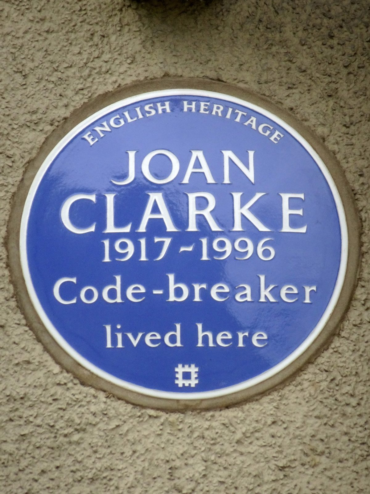
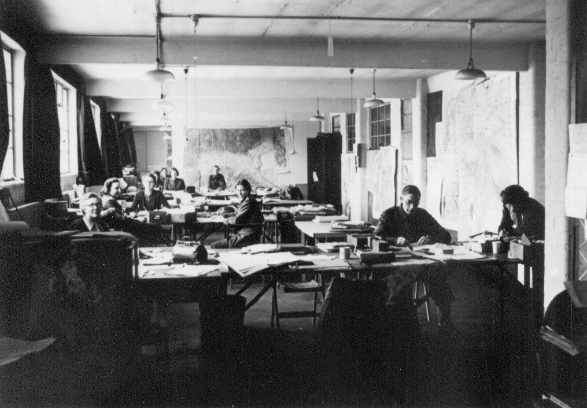
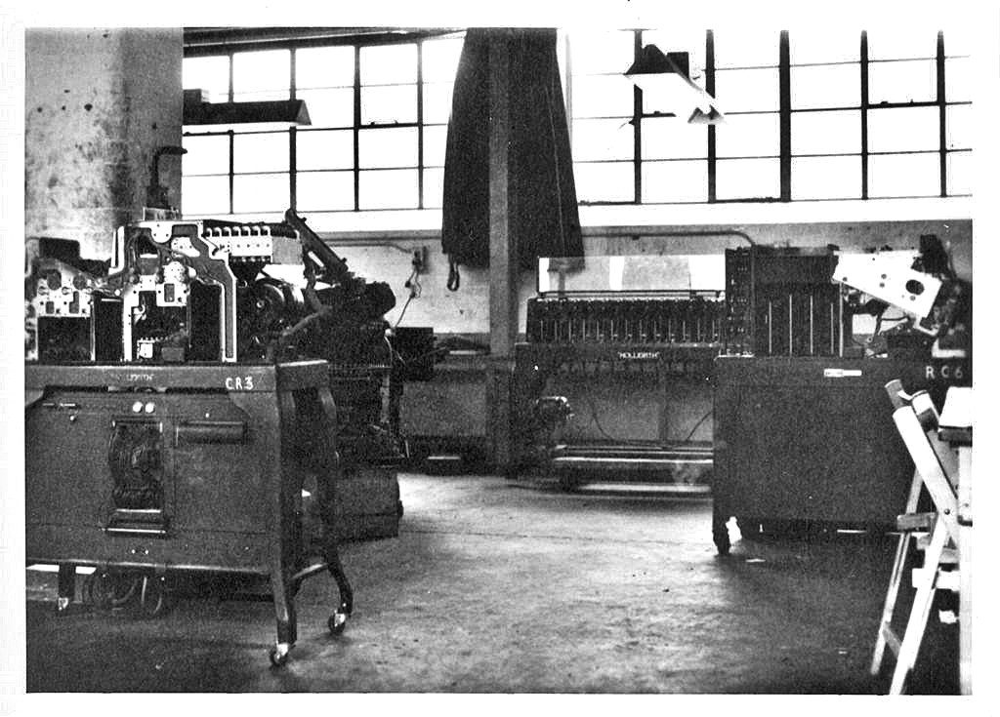

Unit 1 · Lesson 1
What was true?
Two hours of film. How much of it really happened? Today we check, like detectives.
The story
The film says it is based on a true story. The people were real, but the film changes the order of events, the words people say, and even whole storylines. Our job today is fact-checking: we test each claim against sources.
In the film, Turing is a lonely genius. In reality, Bletchley Park was a team of thousands. Alastair Denniston, the head of the codebreakers, chose Turing in 1938 and supported him: the film turns him into an enemy. Gordon Welchman added the 'diagonal board' that made the Bombe much faster. In October 1941 four codebreakers, Turing among them, wrote to Winston Churchill to ask for more staff. Churchill answered: 'Action this day'.

Joan Clarke was a brilliant Cambridge mathematician. Welchman, her teacher, brought her to Bletchley in June 1940: not a crossword. There was no job grade for a woman codebreaker, so she was graded and paid as a 'linguist', although she spoke no foreign language. She and Turing were engaged for a few months in 1941 and stayed friends. In 1944 she became deputy head of Hut 8.


At the peak, in 1945, almost 9,000 people worked at Bletchley Park, and about three quarters of them were women. Women from the navy, the Wrens, ran the Bombes. Others were operators, linguists and codebreakers. They all kept the secret for about thirty years.


Some things in the film are true but moved. John Cairncross really was a Soviet spy at Bletchley Park in 1942–43, but he translated messages in Hut 3; there is no evidence he worked with Turing. The Daily Telegraph crossword contest was real (January 1942), but it was the newspaper's idea, not Turing's.
The science
Four things every computer does
Every computer does four things: input (information goes in), process (it is worked on), output (a result comes out) and storage (it is kept for later). We call this IPOS. Bletchley Park worked like a computer made of people: input = intercepted enemy messages; process = people and Bombes; output = decoded messages; storage = a huge card index. In the kitchen: ingredients in, the cook follows the recipe, the dish goes out, leftovers go into the pantry.
- The cook = CPU core
- The metronome = clock (GHz)
- The countertop = cache
- The workbench = RAM
- The pantry = storage (SSD / HDD)
- Input
- Process
- Output
- Storage


Computers were people
Until the 1950s, a 'computer' was a person whose job was to calculate. At NASA, Katherine Johnson, Dorothy Vaughan and Mary Jackson worked as human computers. In 1962 the astronaut John Glenn asked for Katherine Johnson to check the electronic computer's numbers by hand before his flight.

How to fact-check a claim
Take one claim from the film. Find two independent sources: two different places that did not copy each other, for example a museum and a historian. Compare. Then decide: TRUE (it happened, maybe simplified), CHANGED (it happened, but who, when or how is different) or INVENTED (there is no evidence for it).
Check now
Quick questions. You see the answer at once.
You take a photo with your phone. The camera sensor collects the light. Which part of IPOS is that?
- input
- process
- output
- storage
In reality, the spy John Cairncross worked in Turing's team in Hut 8.
True or false?
Before the 1950s, what was a 'computer'?
- a person whose job was to calculate
- a machine with a screen
- a book of tables
Try it
Twelve real events, from Turing's school days to his royal pardon. Put them in order, oldest at the top, then press Check.
Paper version
In order: 1930 Christopher Morcom dies · 1932 Rejewski breaks Enigma · 1936 Turing's paper 'On Computable Numbers' · 1939 (July) the Polish handover at Pyry · 1940 the first Bombe, 'Victory' · 1941 the letter to Churchill · 1942 the Daily Telegraph crossword · 1943 Turing meets Shannon at Bell Labs · 1944 Colossus at Bletchley Park · 1952 Turing is convicted · 1974 the secret comes out · 2013 the royal pardon. On paper: cut out the twelve events, shuffle them, and put them in order.
Your turn
Exercises
From ★☆☆ (easy) to ★★★ (hard). Use a hint if you are stuck.
-
Exercise 1 ★☆☆
In reality, how did Joan Clarke come to Bletchley Park?
- She won Turing's newspaper crossword test.
- Gordon Welchman, her Cambridge teacher, brought her in 1940.
- Denniston saw her name in a newspaper.
-
Exercise 2 ★☆☆
In 1945, about three quarters of the people working at Bletchley Park were women.
True or false?
-
Exercise 3 ★☆☆
Bletchley Park as a computer made of people. Match each part to its job.
- input — ?
- process — ?
- output — ?
- storage — ?
-
Exercise 4 ★★☆
Put the steps of a fact-check in order.
- Compare the claim with the sources
- Decide: true, changed or invented
- Find two independent sources
- Read the claim carefully
- Write the evidence and name the sources
-
Exercise 5 ★★☆
Almost 9,000 people worked at Bletchley Park in 1945, and about three quarters were women. About how many women is that?
-
Exercise 6 ★★☆
Match each claim from the film to its verdict.
- Joan Clarke is recruited through Turing's crossword. — ?
- Turing is convicted in 1952 and pardoned in 2013. — ?
- A newspaper crossword is used to find codebreakers, and it is Turing's idea. — ?
-
Exercise 7 ★☆☆
Your team saves the fact-check document. Which file name follows the class rule?
- documento finale (2).docx
- Team_FilmFactCheck.docx
- fact check!!.docx
-
Exercise 8 ★★★
In the film, Commander Denniston tries to stop Turing's machine and fire him. True, changed or invented? Give your evidence and name a source.
In one sentence
A computer: input, process, output, storage. A good story still needs two sources.
Words of the chapter
- fact-check
- testing a claim against two independent sources verifica dei fatti
- claim
- something a person or a film says is true affermazione
- evidence
- the facts that show a claim is true or false prova
- input
- information that goes into a computer ingresso (input)
- output
- the result that comes out of a computer uscita (output)
- storage
- where information is kept for later memorizzazione
- human computer
- a person whose job was to calculate calcolatore umano